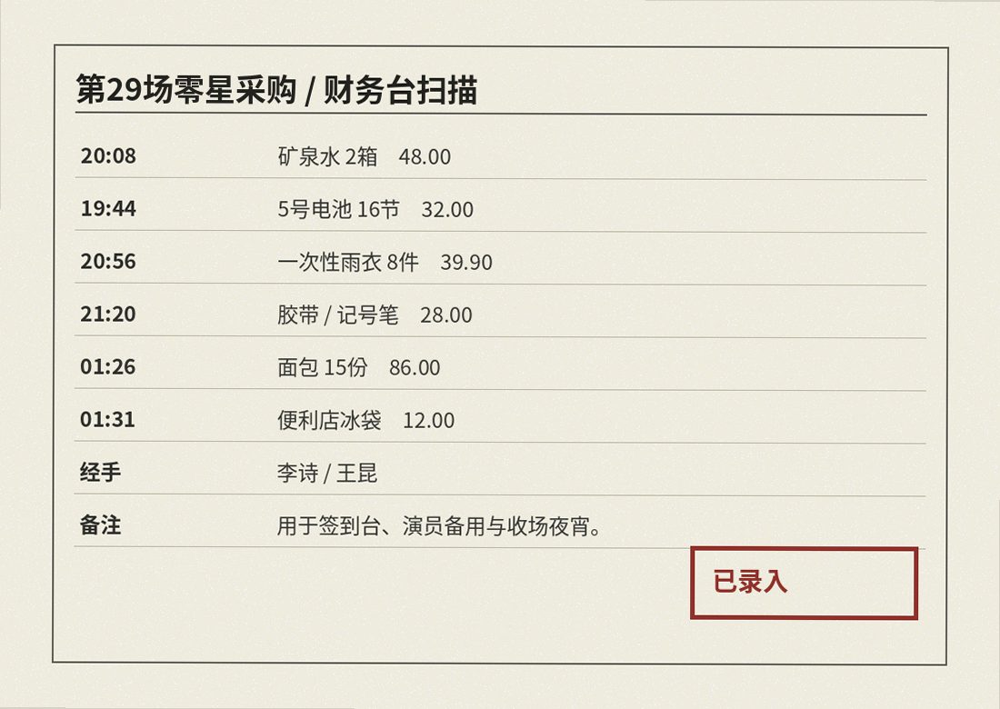

夜场系统 > 用品 / 报销 > 09/17
用品领用
| 时间 | 物品 | 数量 | 领用人 | 备注 |
|---|---|---|---|---|
| 19:18 | 黑色扎带 | 2包 | 王昆 | 演员服装 / 道具线 |
| 19:44 | 5号电池 | 16节 | 陈明 | 对讲机 |
| 20:08 | 矿泉水 | 2箱 | 李诗 | 签到桌 |
| 20:56 | 一次性雨衣 | 8件 | 王昆 | 演员备用 |
| 21:20 | 胶带 / 记号笔 | 各2 | 赵志峰 | 场地标记 |
零星报销

| 22:17 | 网约车 42.60 | 临时演员迟到补送 |
|---|---|---|
| 01:26 | 面包 15份 / 86.00 | 结束后夜宵 |
| 01:31 | 便利店冰袋 12.00 | 标准场参与者膝盖擦伤 |
| 02:02 | 咖啡 4杯 / 64.00 | 收场值班 |
本页没有设备或事故处理权限，只是财务台留下的普通夜场杂项。